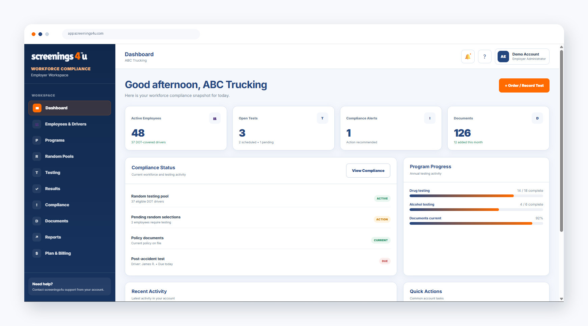

Employers
Manage employees, drivers, DOT and non-DOT programs, testing requirements, records, documents, and compliance status.
Explore employer software →Manage employees, DOT and non-DOT programs, random pools, testing workflows, compliance records, documents, deadlines, and reporting from one secure screenings4u platform.
Give your team a clear view of employees, testing activity, random programs, compliance alerts, documents, reporting, and more from one secure screenings4u workspace.

Each account type gets the tools, permissions, and workflow designed for its role—not a generic portal with features you do not need.
Manage employees, drivers, DOT and non-DOT programs, testing requirements, records, documents, and compliance status.
Explore employer software →Keep your program participation, testing history, documents, deadlines, and compliance records organized in one account.
Explore owner-operator software →Run multiple client programs, employer workforces, consortium pools, testing activity, records, and reporting at scale.
Explore C/TPA software →Workforce Compliance centralizes the operational record of your workforce and testing program while preserving clear DOT and non-DOT distinctions.
The platform follows the operational lifecycle of your compliance program from employee enrollment through testing and record retention.
Add employees, drivers, locations, classifications, and program assignments.
Track programs, random pools, testing reasons, deadlines, and compliance tasks.
Use screenings4u or another provider while keeping the workflow in your account.
Maintain results status, documents, reporting, and audit history in one system.
Your monthly subscription is for the Workforce Compliance platform. Testing and fulfillment can be purchased separately when they make sense for your operation.
Your recurring subscription gives you the software tools included in your plan.
When you need fulfillment, purchase drug and alcohol testing through screenings4u from within the ecosystem.
Employer plans start at $85/month, Owner-Operator plans at $45/month, and C/TPA plans at $125/month.